Questão 1 · Apresentação Clínica · 4000181815Leia o caso clínico. RN, lho de mãe sem pré-natal, a termo, com APGAR 9/9, evolui em seguida ao parto, com desconforto respiratório progressivo e eliminação em excesso de secreção salivar espumosa pela boca e narinas. Nesse caso, qual é a patologia do RN?
A Obstrução de coanas.
B Hérnia diafragmática.
C Atresia de esôfago.
D Cisto broncogênico.
Questão 2 · íleo Meconial · 4000181636A brose cística está presente em 99% dos pacientes com diagnóstico de íleo meconial. Na ausência de brose cística, qual é um dos grupos de recém-nascidos (RN) mais acometidos?
A RN com icterícia.
B RN com asfixia perinatal.
C RN com doença hemolítica.
D RN com hipotireoidismo congênito.
E RN prematuro com peso muito baixo.
Questão 3 · Atresia do Esôf ago e Fístula Traqueoesof ágica · Cirurgia · 4000165615Recém-nascido de termo apresenta salivação abundante e impossibilidade de passagem da sonda orogástrica na sala de parto. A ausculta cardiopulmonar é normal e não se notam outras alterações ao exame físico. Qual é o exame indicado neste momento?
A Broncoscopia.
B Tomografia de tórax e abdome com contraste oral.
C Ultrassonografia de tórax e abdome.
D Radiografia de abdome.
Questão 4 · Apresentação Clínica · Doença de Hirschsprung · Pediatria · 4000165100Lactente de um mês, há 5 dias sem evacuar e há um dia sem eliminar atos, com febre, vômitos, distensão abdominal e diminuição do nível de consciência. Radiogra a de abdome com distensão importante e com níveis hidroaéreos. Histórico de eliminação de mecônio a partir do quarto dia de vida. Apresentou na evolução quadro de sepse e óbito. Baseado na principal hipótese diagnóstica analise as asserções abaixo e a relação proposta entre elas. I – O quadro apresentado é a complicação com maior risco de mortalidade nesta doença, que é a enterocolite tóxica. PORQUE II – A estase permite a proliferação de bactérias, como o Clostridium difícile, Staphylococcus aureus e anaeróbios, com consequente sepse. A respeito destas asserções, assinale a opção correta.
A As asserções I e II são proposições verdadeiras, e a II é uma justificativa da I.
B As asserções I e II são proposições verdadeiras, mas a II não é uma justificativa da I.
C A asserção I é uma proposição verdadeira, e a II é uma proposição falsa.
D A asserção I é uma proposição falsa, e a II é uma proposição verdadeira.
E As asserções I e II são proposições falsas.
Questão 5 · Má Rotação Intestinal e Vólvulo do Intestino Médio · 4000164976Recém-nascido (RN), 25 dias, é atendido com história de “vômitos biliosos” há cerca de 6 horas. Exame físico: apático; sonolento; desidratado; hipocorado; perfusão periférica lenti cada; abdome difusamente distendido. Radiogra a simples do abdome: “pobreza” de gás intestinal. A hipótese diagnostica mais provável é:
A volvo do intestino médio
B estenose hipertrófica do piloro
C atresia jejuno ileal tipo 1
D invaginação intestinal aguda
Questão 6 · Obstrução Duodenal · Cirurgia · 4000151664Recém-nascido de parto cesárea, do sexo masculino com 2800kg, 48cm. Apgar 7 e 8 e história de polihidrâmnios. No segundo dia de vida, após a mamada ao seio, apresentou peristaltismo de luta e vômitos biliosos, sem distensão abdominal. O exame de imagem a ser solicitado inicialmente para o diagnóstico é:
A Clister opaco.
B Ultrassonografia abdominal.
C Seriografia esofagogastrica.
D Radiografia simples ortostática.
Questão 7 · Pediatria · Gastrosquise · 4000146264Ao nascimento de um recém-nascido, o pediatra solicita avaliação do cirurgião pediátrico por um defeito da parede abdominal. Ao exame físico: cordão umbilical tópico, alças de intestino delgado expostas em orifício a direita do cordão umbilical, não cobertas por membranas. A principal hipótese diagnóstica é:
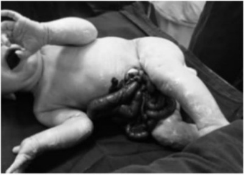
A Atresia ileal.
B Doença de Hirschsprung.
C Onfalocele.
D Gastrosquise.
Questão 8 · Pediatria · Hérnia diaf ragmática HD · Hérnia Diaf ragmática Congênita · 4000146100A hérnia diafragmática congênita é uma causa relativamente comum de desconforto respiratório neonatal. A maioria destas hérnias ocorrem no lado esquerdo. Assinale a correta.
A As hérnias diafragmáticas congênitas posterolaterais são conhecidas como hérnias de Bochdalek.
B As hérnias diafragmáticas congênitas posterolaterais são conhecidas como hérnias de Morgagni.
C As hérnias diafragmáticas congênitas anteromediais são conhecidas como hérnias de Stoppa.
D As hérnias diafragmáticas congênitas anteromediais são conhecidas como hérnias de Bochdalek.
Questão 9 · Tratamento · Diagnóstico · Gastrologia Pediátrica · 4000144219Lactente masculino de 9 meses, foi admitido na unidade de pronto atendimento com história de distensão abdominal e febre há 4 dias. Associado ao quadro, refere parada da eliminação de gases e fezes. Antecedentes: nascido a termo, sem comorbidades. Refere atraso na eliminação do mecônio e constipação intestinal desde o período neonatal. Ao exame físico: regular estado geral, desidratado + 1/+4, febril. Abdome: distendido, timpânico à percussão e tenso à palpação. A radiografia de abdome é mostrada na figura. Qual a conduta imediata mais adequada neste momento?
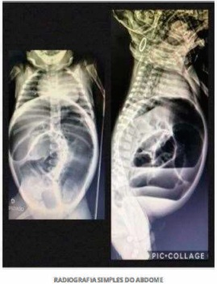
A Lavagem intestinal.
B Laparotomia (abaixamento de cólon).
C Laparotomia (colostomia).
D Colonoscopia.
Questão 10 · Malf ormações Anorretais · Hidronef rose Antenatal · Cirurgia Inf antil · 4000144214Recém-nascido de 2 dias de vida, sexo aparentemente feminino (anomalia anorretal complexa), encaminhado de outro serviço. Na admissão: bom estado geral, hidratado (com soro de manutenção via endovenosa), corado, eupneico, afebril. Ao exame físico: genitália de fenótipo feminino, porém com orifício perineal único, anterior, próximo ao clitóris, com saída de urina em gotejamento. Ausência de orifício anal. Abdome globoso, indolor e sem resistência à palpação. Presença de massa palpável em hipogástrio e anco esquerdo. Considerando o provável diagnóstico, como podemos interpretar o achado de massa palpável?
A Metrocolpos.
B Hidronefrose.
C Bexigoma.
D Fecaloma.
Questão 11 · Gastrosquise · 4000143241Em relação à gastrosquise, é correto afirmar que:
A tem grande associação a outras malformações congênitas, inclusive cromossômicas
B a herniação do conteúdo abdominal ocorre pela base do cordão umbilical
C pode estar associada à síndrome de Beckwith-Wiedemann
D o defeito da parede abdominal é lateral ao cordão umbilical
Questão 12 · Etiologia · Apresentação Clínica · 4000143212Com 38 semanas, uma gestante abandonou o pré-natal, pois descobriu polidramnia através de uma ultrassonogra a realizada na 26° semana. Teve parto normal a termo, porém o recém-nascido apresenta intensa distensão abdominal ao chorar e engasgos ao mamar o colostro. Nesse caso, a mal formação a ser considerada consiste em:
A imperfuração anal
B má rotação do intestino anterior
C atresia de esôfago com fístula traqueoesofágica
D atresia duodenal e fístula de ducto onfalomesentérico
Questão 13 · Diagnóstico · Pediatria · 4000141678Menino com 16 dias de vida apresenta di culdade para evacuar desde o nascimento, associada a distensão abdominal. AP: nascido a termo, eliminou mecônio com 3 dias de vida, após estímulo retal. Desde a alta da maternidade, evacuou duas vezes, após aplicação de supositório de glicerina. Exame físico: abdome globoso, distendido, RHA propulsivos, sem sinais de reação peritoneal. O método considerado como padrão-ouro para o diagnóstico da principal hipótese diagnóstica é
A manometria anorretal.
B enema opaco.
C biópsia retal de sucção.
D ressonância nuclear magnética.
Questão 15 · Abdome Agudo Obstrutivo · Cirurgia · Hérnia Diaf ragmática Congênita · 4000141042Paciente de 30 anos de idade, masculino, sem patologias prévias, chega à sala de emergência com fortes dores abdominais e intenso desconforto respiratório, com saturação de 83% e FR = 27 incursões por min., com distensão abdominal importante, com suspeita de peritonite e sinais clínicos sugestivos de abdome agudo obstrutivo. Realizado raio X de tórax e de abdome agudo, que evidenciou grande opaci cação em hemitórax à esquerda, com elevação da cúpula diafragmática à esquerda e níveis hidroaéreos em topografia de hemitórax à esquerda. Sobre o relato, pode-se afirmar que se trata, possivelmente, de
A pneumonia extensa à esquerda.
B pneumotórax espontâneo secundário a bleb.
C hemotórax à esquerda secundário a provável trauma fechado.
D lesão pleural à esquerda com hemotórax.
E hérnia diafragmática congênita crônica agudizada.
Questão 16 · Pediatria · Hérnia Diaf ragmática Congênita · 4000139768Sobre a hérnia diafragmática congênita, é correto afirmar:
A A incidência estimada é de 1 para cada 1.000 nascimentos, com predominância no sexo masculino.
B A associação com outras malformações é infrequente, predominando os defeitos das vias biliares extra- hepáticas.
C Defeitos do lado esquerdo têm pior prognóstico do que os defeitos do lado direito.
D O local mais comum é a herniação pelo forame de Larry, denominada hérnia de Bochdalek.
E O diagnóstico pode ser antenatal, por ultrassonografia materna a partir de 15 semanas de gestação.
Questão 17 · Onf alocele · Cirurgia · 4000138398A figura a seguir representa um defeito congênito da linha média da parede abdominal, que resulta na herniação de conteúdo abdominal recoberto por membrana avascular translúcida, onde se insere o cordão umbilical. É chamado de:
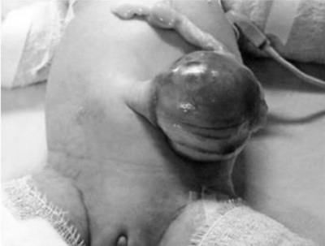
A Hérnia de Bochdaleck.
B Hérnia umbilical.
C Gastrosquise.
D Onfalocele.
E Ducto onfalomesentérico persistente.
Questão 18 · Pediatria · Neonatologia · Atresias e Estenoses Duodenais · 4000137428Recém-nascido (RN), masculino, prematuro de 34 semanas, 2.150g, com síndrome de Down, iniciou quadro de vômitos biliosos após as primeiras mamadas, ainda no berçário. Não eliminou mecônio. Exame físico: corado; acianótico; ictérico; desidratado; taquipneico; afebril. Ausculta pulmonar: normal. Exame abdominal: sem distensão, com sinais de irritação peritoneal e a peristalse normal. A sonda orogástrica drenava liquido esverdeado. RX simples de abdome: sinal da dupla bolha. A hipótese diagnóstica mais provável é:
A obstrução duodenal.
B atresia ileal.
C doença de
D íleo meconial.
Questão 19 · Tratamento · Diagnóstico · Cirurgia · 4000130426Lactente de cinco meses, amamentado exclusivamente ao seio, apresenta-se com quadro de aumento de volume abdominal desde o nascimento, di culdade de ganho de peso e vômitos ocasionais. Mãe relata que apresentou eliminação de mecônio ao nascimento, mas vem apresentando desde então constipação crônica. Abdome distendido e timpânico, ânus com posicionamento normal. No toque retal ausência de fezes na ampola. Paciente é internado para investigação e apresenta na sequência quadro de diarreia, sensibilidade abdominal, sepse e sinais de obstrução intestinal na evolução. Considerando esta situação, analise as asserções abaixo e a relação proposta entre elas. I - Não se deve realizar procedimento cirúrgico no momento. PORQUE II - Ocorreu provavelmente uma proliferação bacteriana pela estase, levando a uma enterocolite ou megacólon tóxico. A respeito destas asserções, assinale a opção correta.
A As asserções I e II são proposições verdadeiras, e a II é uma justificativa da I.
B As asserções I e II são proposições verdadeiras, mas a II não é uma justificativa da I.
C A asserção I é uma proposição verdadeira, e a II é uma proposição falsa.
D A asserção I é uma proposição falsa, e a II é uma proposição verdadeira.
E As asserções I e II são proposições falsa.
Questão 20 · Pediatria · Atresias e Estenoses Duodenais · 4000129187Assinale a assertiva correta sobre obstruções intestinais congênitas do duodeno em recém-nascidos.
A As estenoses duodenais congênitas são mais frequentes do que as atrésias duodenais.
B Anomalias congênitas associadas ocorrem em 45-65% dos casos, sendo que a trissomia do 21 (síndrome de Down) é observada em quase metade dos pacientes.
C As obstruções duodenais ocorrem mais comumente antes da papila duodenal (papila do Vater).
D As estenoses duodenais congênitas apresentam o sinal clássico da dupla bolha, com dilatação do estômago e duodeno e com ausência de gases no intestino distal.
Questão 21 · Cirurgia Inf antil · Atresias e Estenoses Duodenais · Cirurgia · 4000120133O neonatologista é chamado para avaliar um recém-nascido com 16 horas de vida no alojamento conjunto. A mãe relata que o bebê apresentou vômitos amarelos 3 vezes. Nasceu de parto normal, com Apgar 9/10, peso de 2.490 g e idade gestacional pelo Capurro de 37 semanas. A mãe é primigesta, fez duas consultas de pré-natal, pois descobriu a gravidez tardiamente, mas nega qualquer intercorrência na gestação. Ao exame físico, o recém-nascido está ativo, hidratado, com boa perfusão, abdome leve- mente distendido, não eliminou mecônio. O médico solicita uma radiogra a de abdome mostrada abaixo. Dentre as alternativas abaixo, a hipótese diagnóstica mais provável é:
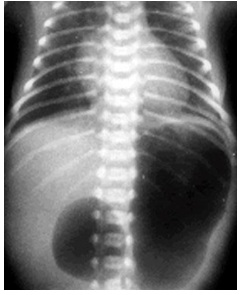
A estenose hipertrófica de piloro.
B atresia de duodeno.
C pâncreas anular.
D má rotação intestinal.
E atresia jejuno ileal.
Questão 22 · Diagnóstico · Cirurgia · 4000117090O Sinal radiográfico de dupla bolha ocorre em:
A Gastrosquise.
B Fistula traqueoesofágica.
C Atresia de esôfago.
D Megaesôfago.
E Atresia duodenal.
Questão 23 · Doença de Hirschsprung · Doença de Hirschsprung · 4000112008Menina, 3 anos. Informante refere constipação intestinal desde o período neonatal evacuando apenas com medidas (estímulo com supositórios). Evoluiu, quando lactente, com episódios de impactação de fezes com necessidades de lavagem intestinal. Condição atual: evacua apenas com lavagem intestinal e apresenta escape fecal. Refere 4 internações com ""diarreia"", segundo mãe. A foto ilustra o paciente durante o momento de sua avaliação. Considerando o diagnóstico mais provável, qual a causa possível para estes episódios de ""diarreia""?

A Rotavírus.
B Alergia alimentar.
C Enterocolite.
D Reação as lavagens.
Questão 24 · Atresias e Estenoses Duodenais · 4000111170Lactante de 10 meses portador de Síndrome de Down é encaminhado ao cirurgião pediátrico para realização de fundoplicatura por re uxo grave com di culdade de ganho ponderal. A mãe relata que o lho apresenta vômitos alimentares 2 a 3 vezes ao dia e o quadro se intensi cou aos 6 meses, quando foram introduzidos alimentos pastosos. Traz um exame contrastado que revela a imagem a seguir. Qual é a melhor conduta?

A Piloroplastia.
B Duodeno-duodeno anastomose.
C Hiatoplastia e fundoplicatura.
D Ranitidina e domperidona.
Questão 25 · Apresentação Clínica · Cirurgia · 4000108100Insu ciência respiratória ao nascimento, acompanhada ao exame físico de aumento do diâmetro anteroposterior do tórax e abdome escavado sugere o diagnóstico de:
A Hérnia diafragmática congênita.
B Enfisema lobar congênito.
C Síndrome do desconforto respiratório do recém-nascido.
D Malformação adenomatoide cística do pulmão.
Questão 26 · Diagnóstico · Cirurgia · 4000107779Durante o acompanhamento da gestante, foi notado o sinal da ""dupla bolha"" na ultrassonogra a pré-natal, que foi confirmado na radiogra a de abdome do recém-nascido realizada logo após o nascimento. Dentre os diagnósticos abaixo, o mais provável é:
A atresia de esôfago sem fístula.
B atresia duodenal.
C estenose de piloro.
D divertículo de Meckel.
E doença de Hirschprung.
Questão 27 · Diagnóstico · Cirurgia · 4000097914Recém nascido a termo, parto cesáreo eletivo, após 18h de vida apresenta recusa das mamadas, associado a vômitos biliosos e distensão abdominal. Sem febre. Sem sinais de infecção. Ao exame físico apresenta abdome distendido, indolor, sem sinais de peritonite. É realizado a radiogra a de abdome abaixo. Qual o tratamento MAIS adequado para a patologia acima?
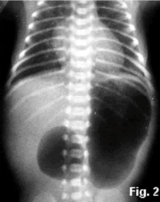
A dilatação endoscópica.
B duodeno-duodenostomia.
C retosigmoidectomia.
D cirurgia de Duhamel modificada.
Questão 28 · Diagnóstico · Cirurgia · 4000097874Recém nascido a termo, parto cesáreo eletivo, após 18h de vida apresenta recusa das mamadas, associado a vômitos biliosos e distensão abdominal. Sem febre. Sem sinais de infecção. Ao exame físico apresenta abdome distendido, indolor, sem sinais de peritonite. É realizado a radiogra a de abdome abaixo. Baseado no quadro acima e no exame radiológico, qual a hipótese diagnóstica?
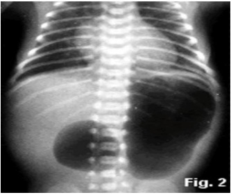
A estenose hipertrófica de piloro.
B volvo de sigmóide.
C megacólon congênito.
D atresia duodenal.
Questão 29 · Diagnóstico · Cirurgia · 4000095595Um neonato apresenta vômitos biliosos persistentes, sem distensão abdominal. A radiogra a de abdome mostra o sinal da dupla bolha. O diagnóstico mais provável é:
A doença de Hirschsprung.
B atresia duodenal.
C estenose hipertrófica do piloro.
D pâncreas anular.
E Má rotação com hérnia interna
Questão 30 · Principais Malf ormações Broncopulmonares · Cirurgia · Hérnia Diaf ragmática Congênita · 4000084579A hipoplasia pulmonar pode acontecer quando ocorre uma interferência no desenvolvimento do sistema alveolar nos últimos dois meses de gestação. A causa mais frequente de hipoplasia pulmonar é:
A síndrome de Prune-Belly
B hérnia de Bochdalek
C tetralogia de Fallot
D cisto congênito
Questão 31 · Onf alocele · Cirurgia · 4000080355É um defeito congênito central da parede abdominal. O defeito fascial é geralmente maior do que 4 cm de diâmetro, com um saco membranoso intacto, composto por uma camada exterior de âmnio e uma camada interior de peritônio:
A Gastrosquise.
B Hérnia inguinal.
C Pentalogia de Cantrell.
D Onfalocele.
Questão 32 · Tratamento · Cirurgia · 4000080332O tratamento cirúrgico clássico para atresia duodenal é:
A Duodeno-duodenostomia laterolateral ou longitudinal do tipo diamond-shaped.
B Mucosectomia endoscópica com dilatação.
C Ressecção do segmento estenosado e anastomose primária.
D Gastroduodenopancreatectomia.
Questão 33 · Tratamento · Diagnóstico · Doença de Hirschsprung · 4000079771Recém-nascido com 20 dias de vida, em investigação de distensão abdominal é submetido à radiogra a de abdome que evidencia distensão importante de colón descentente, sem achado de pneumatose intestinal. Foi submetido à biopsia retal que evidenciou ausência de células ganglionares e número aumentado de bras nervosas acetilcolinesterase positiva. A conduta cirúrgica adequada para este caso, dentre as opções abaixo é:
A Amputação abdominoperineal de Milles.
B Colostomia definitiva pela técnica de Parks.
C Colostomia provisória e ressecção do segmento agangliônico e programação posterior pela técnica de Duhamel.
D Proctocolectomia total endoanal pela técnica de Swiert.
Questão 34 · Cirurgia · Má Rotação Intestinal e Vólvulo do Intestino Médio · 4000078103Você é o cirurgião de plantão em um hospital secundário e acaba de chegar uma criança de um mês de vida com a mãe, que relata que a criança estava bem até que, subitamente, apresentou dor intensa abdominal e vômitos biliosos. Ao exame encontra-se pálida, taquicárdica, toxemiada, com dor contínua e febre. Ao exame abdominal nota-se massa palpável com dor intensa no local e sinais de irritação peritoneal. A hipótese diagnóstica mais provável é:
A Linfoma.
B Perfuração gástrica.
C Invaginação intestinal.
D Volvo do intestino médio.
E Nenhuma das alternativas anteriores.
Questão 35 · Malf ormações Anorretais · Cirurgia · 4000064383Recém-Nascido a termo, sexo masculino, parto normal, 8 consultas de pré-natal realizadas, ultrassom morfológico normal, Apgar 9/10, no exame físico após o nascimento não apresentava o orifício anal. Qual a conduta a ser tomada frente a este achado?
A Colostomia de emergência.
B Anorretoplastia sagital posterior nas primeiras 24h de vida.
C Aguardar 24h e, se não houver saída de mecônio pelo períneo, realizar invertograma.
D Autorizar aleitamento materno exclusivo até decisão terapêutica.
E Intubação orotraqueal obrigatória, sonda orogástrica aberta e avaliação da cirurgia pediátrica.
Questão 36 · Onf alocele · Cirurgia · 4000063064É apresentação clínica de onfalocele no RN:
A Defeito a direita do coto umbilical sem herniação de alças intestinais.
B Herniação do conteúdo abdominal na linha média, recoberta por saco peritoneal, com cordão umbilical inserido no centro da massa.
C Defeito a direita do coto umbilical com herniação de alças intestinais não recoberta por saco peritoneal.
D Herniação de alças intestinais e outros órgãos abdominais não recoberta por saco peritoneal.
Questão 37 · Atresia do Esôf ago e Fístula Traqueoesof ágica · Cirurgia · 4000061644A respeito da atresia de esôfago, considere as afirmativas a seguir. I. A suspeita diagnóstica ocorre no pré-natal e é confirmada na sala de parto. II. As complicações pós- operatórias mais frequentes são deiscência da anastomose, estenose da anastomose e re uxo gastroesofágico (RGE). III. As anomalias associadas mais frequentes são cardíacas, renais e neurológicas. IV. O tipo mais comum é sem fístula traqueoesofágica. Assinale a alternativa correta.
A Somente as afirmativas I e II são corretas.
B Somente as afirmativas I e IV são corretas.
C Somente as afirmativas III e IV são corretas.
D Somente as afirmativas I, II e III são corretas.
E Somente as afirmativas II, III e IV são corretas.
Questão 38 · Diagnóstico · Doença de Hirschsprung · Cirurgia · 4000042478Assinale a alternativa incorreta com relação ao diagnóstico da doença de Hirschsprung:
A A etapa inicial de diagnóstico em recém-nascido com evidências radiológicas de obstrução intestinal distal é um enema de bário.
B O espasmo do reto distal geralmente resulta em calibre menor quando comparado com o cólon sigmoide proximal.
C A ausência de eliminação completa de contraste instilado após 6 horas é um indicador da doença de Hirschsprung.
D A biópsia retal é o padrão-ouro para o diagnóstico da doença de Hirschsprung.
Questão 39 · Diagnóstico · Cirurgia · 4000039173A alteração do trato gastrointestinal congênita que se associa frequentemente a outras anomalias, como cardiopatias congênitas, atresia esofágica, ânus imperfurado, atresia de intestino delgado, atresia biliar, anomalias renais e vertebrais, que geralmente apresenta a radiografia clássica abaixo é:
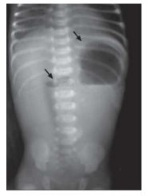
A Intussuscepção intestinal.
B Enterocolite Necrotizante.
C Hernia de Bochdaleck.
D Atresia Duodenal.
Questão 40 · Gastrosquise · 4000028750Recepcionado recém-nascido lho de mãe primigesta, 25 anos de idade, A positivo, sorologias normais, gestação sem intercorrências. Parto normal, termo, 39 semanas. Logo ao nascimento, observa-se evisceração paraumbilical. Provavelmente trata-se de:
A Síndrome de Prune Belly.
B Onfalocele.
C Gastrosquise.
D Tocotraumatismo.
Questão 41 · Diagnóstico · 4000022305Recém-nascido pré-termo tardio, feminino e com síndrome de Down, nasceu bem, sem intercorrências. Na segunda semana de vida evoluiu com vômitos e abdome escavado ao exame físico. O Raio X de abdome evidencia o sinal da “dupla bolha”. O diagnóstico mais provável é:
A Atresia duodenal
B Estenose hipertrófica do piloro
C Íleo meconial
D Invaginação intestinal
E Atresia ileal
Questão 42 · Hérnia Diaf ragmática Congênita · 4000021175Neonato com 2 horas de vida, a termo, apresenta desconforto respiratório agudo, é submetido à radiogra a de tórax sob suspeita de hérnia diafragmática. A lesão congênita localizada ântero-medial que caracteriza um defeito da junção esternocondral é mais comum na hérnia:
A Diafragmática traumática.
B Petit.
C Bochdalek.
D Morgagni.
Questão 43 · Apresentação Clínica · 4000012128Considere as patologias cirúrgicas dos recém-nascidos listadas a seguir. Dessas, qual não costuma causar distensão abdominal como manifestação clínica?
A Atresia ileal.
B Íleo meconial.
C Atresia / estenose de duodeno.
D Ânus imperfurado.
Questão 44 · Apresentação Clínica · 4000011224Gestante de 24 semanas vem para consulta de rotina pré-natal. A ultrassonogra a morfológica evidenciou feto feminino, único, artéria umbilical única e polidrâmnio, sem visibilização de bolha gástrica. O diagnóstico é:
A atresia de esôfago sem fístula.
B atresia de primeira porção duodenal.
C coristoma.
D fístula em H.
E atresia de esôfago com fístula distal.
Questão 45 · Etiopatogênese · Cirurgia Inf antil · Cirurgia · 4000010207Neonato com 2 horas de vida, a termo, apresenta desconforto respiratório agudo, é submetido à radiogra a de tórax sob suspeita de hérnia diafragmática. A lesão congênita localizada ântero-medial que caracteriza um defeito da junção esternocondral é mais comum na hérnia:
A Diafragmática traumática.
B Petit.
C Bochdalek.
D Morgagni.
Questão 46 · Malf ormações da Parede Abdominal · Obstrução Duodenal · Doença de Hirschsprung · 4000114847Sobre o recém-nascido, assinale a alternativa CORRETA.
A O diagnóstico de obstrução intestinal no recém-nascido geralmente é feito pelatomografia computadorizada de abdome total com contraste endovenoso.
B A gastrosquise pode ser tratada conservadoramente, por não haver exposição dasalças intestinais.
C O polidrâmnio materno é um dos sinais de suspeita de má formação do tubo digestivodo recém-nascido.
D O sinal da dupla bolha é característico de obstrução colônica.
E A doença de Hirschsprung é uma das possíveis causas de obstrução intestinal alta(delgado) no período neonatal.
Questão 47 · Cirurgia · Má Rotação Intestinal e Vólvulo do Intestino Médio · 4000106397Lactente de 45 dias de vida, termo, peso atual de 4,5kg, é trazido ao pronto-socorro com piora importante do estado geral, acompanhada de vômitos biliosos e parada de eliminação de gases e fezes há 6 horas. Ao exame clínico está em mau estado geral, descorado 3+/4+, com abdome muito distendido, tenso e doloroso. Ao toque retal há saída de pequena quantidade de sangue. Qual o diagnóstico mais provável?
A Enterite necrotizante.
B Volvo de intestino médio.
C Divertículo de Meckel hemorrágico.
D Estenose hipertrófica de piloro.
Questão 48 · Malf ormações da Parede Abdominal · Cirurgia · 4000105698Menina de 8 anos, admitida em pronto-socorro com história de parada da eliminação de gazes e fezes há 7 dias. Há 5 dias, piora do quadro, apresentando vômitos biliosos e dor abdominal em cólica. Antecedentes pessoais: nascida com defeito de fechamento de parede abdominal, conforme foto da época, corrigido cirurgicamente. Exame físico: regular estado geral, com fácies de dor. Abdome: assimetria com abaulamento em anco direito, com peristaltismo visível no local. Tenso e doloroso à palpação, e sem sinais de irritação peritoneal. Qual o diagnóstico mais provável e a melhor conduta para este caso?
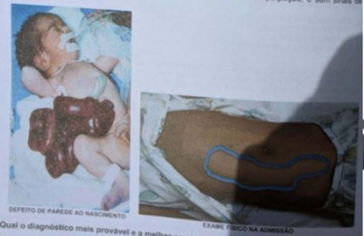
A Enterocolite, complicação de gastrosquise. Tratamento clínico.
B Má rotação intestinal, complicação de onfalocele. Tratamento clínico.
C Bridas e aderências, complicação de gastrosquise. Tratamento cirúrgico.
D Enterocolite, complicação de onfalocele. Tratamento cirúrgico.
Questão 49 · Apresentação Clínica · Cirurgia · 4000099907Um recém-nascido que apresenta algumas horas após o nascimento desconforto respiratório, causando hipoxemia severa, respiração ruidosa com grunhido, tiragem, dispneia, cianose, abdômen escafoide e desvio das bulhas cardíacas para a direita, apresenta provavelmente diagnóstico de:
A Hérnia diafragmática congênita.
B Malformação adenomatoide cística congênita.
C Cisto broncogênico.
D Eventração diafragmática.
Questão 50 · Tratamento · Diagnóstico · Atresias e Estenoses Duodenais · 4000095474Assinale a alternativa INCORRETA com relação à atresia duodenal:
A É associada com várias condições incluindo prematuridade, síndrome de Down, polidramnio materno, má rotação, pâncreas anular e atresia biliar.
B Na maioria dos casos, a obstrução do duodeno é proximal à ampola de Vater (85%), portanto os bebês apresentam vômitos não-biliosos.
C Em pacientes com atresia por membrana mucosa, sintomas de vômitos pós-prandiais podem ocorrer em etapas mais tardias da vida.
D Imediatamente após o nascimento, uma radiografia abdominal simples mostra o típico sinal da dupla bolha, quando feito antes da descompressão do ar gástrico deglutido e armazenado no estomago através de um tubo orogástrico.
Questão 51 · Cirurgia · Má Rotação Intestinal e Vólvulo do Intestino Médio · 4000095330Os princípios do manejo do volvo são tratar a instabilidade hemodinâmica com hidratação venosa, descompressão com sonda gástrica, assim como encaminhar para cirurgia pediátrica para tratamento definitivo. A cirurgia curativa de volvo é chamada de procedimento de Ladd, que inclui todas as abaixo, EXCETO:
A Inspeção da raiz mesentérica.
B Liberação das bandas de Ladd.
C Apendicectomia.
D Ileostomia.
Questão 52 · Atresias e Estenoses Duodenais · Cirurgia · 4000086044Recém-nascido, a termo, com polidrâmnio, nasce com boa vitalidade, elimina mecônio na sala de parto e é encaminhado para o alojamento conjunto. Nas primeiras horas de vida apresenta vômitos não biliosos e distensão abdominal. O RX simples de abdome mostra sinal da dupla bolha. A hipótese diagnóstica mais provável é:
A Atresia ileal.
B Pâncreas anular.
C Megacolon congênito.
D Atresia de esôfago.
Questão 53 · Apresentação Clínica · Cirurgia · Patogênese · 4000080710Em relação a atresia de esôfago e fístula traqueoesofágica congênita, a apresentação mais frequente é:
A fístula traqueoesofágica sem atresia de esôfago
B atresia de esôfago isolada sem fistula traqueoesofágica
C atresia de esôfado distal com fístula traqueoesofágica proximal
D atresia de esôfago proximal com fístula traqueoesofágica distal
Questão 54 · Gastrosquise · Cirurgia · 4000068888Recém-nascido a termo, mãe sem pré-natal, apresenta defeito de parede abdominal com evisceração de intestino, de localização paraumbilical. Trata-se de:
A Extrofia de cloaca.
B Gastrosquise.
C Onfalocele.
D Síndrome de Prune Belly.
Questão 55 · Diagnóstico · Cirurgia · Hérnia Diaf ragmática Congênita · 4000067274O diagnóstico diferencial de hérnia diafragmática congênita inclui:
A Malformação adenomatoide cística/blebs pulmonares.
B Cisto broncogênico/pneumotórax.
C Teratoma cístico/timoma.
D Eventração diafragmática/malformação adenomatoide cística.
E Cisto broncogênico/blebs pulmonares.
Questão 56 · Cirurgia · Hérnia Diaf ragmática Congênita · 4000067236Uma criança é diagnosticada com hérnia congênita de Bochdalek. Nesta condição clínica, qual alternativa abaixo é verdadeira, em relação à hérnia congênita de Bochdalek?
A O reparo cirúrgico deve ser indicado com urgência.
B Hipoplasia pulmonar associada leva à hipocarbia.
C A maioria dos defeitos é encontrado à direita.
D A hipertensão pulmonar é um achado frequente.
Questão 57 · Diagnóstico · Cirurgia · Apresentação Clínica · 4000062637Recém-nato com 24h de vida apresenta vômitos biliosos, sem distensão abdominal, peristalse visível. Realizado teleradiografia simples de abdome que mostra sinal da dupla bolha, o qual é sugestivo de:
A Volvo.
B Atresia de jejuno.
C Atresia de duodeno.
D Divertículo de Mecke.
Questão 58 · Doença de Hirschsprung · Doença de Hirschsprung · Cirurgia · 4000060533Assinale a alternativa que apresenta, corretamente, qual patologia corresponde à moléstia de Hirschsprung.
A Aganglionose intestinal congênita.
B Atresia intestinal.
C Cisto de mesentério.
D Duplicidade gástrica.
E Íleo meconial.
Questão 59 · Atresia do Esôf ago e Fístula Traqueoesof ágica · Cirurgia · 4000048002Em relação às anomalias congênitas do esôfago, pode-se afirmar que:
A Nos pacientes com atresia de esôfago, fístula traqueo-esofágica distal com coto esofágico proximal em fundo cego, é a principal alteração anatômica encontrada
B São exemplos destas anomalias a atresia de esôfago, a duplicação esofágica, o cisto neuroentérico e o divertículo de Zenke
C A anomalia mais comum é o diafragma membranoso, geralmente encontrado nos terços médio e inferior, podendo causar obstruções parcial ou total
D Geralmente, a atresia de esôfago não se correlaciona com outras anomalias e malformações
Questão 60 · Enf isema Lobar Congênito · Cirurgia · 4000047657Diante de um neonato com desconforto respiratório grave, o exame subsidiário mais útil para confirmar o diagnóstico de enfisema lobar congênito é:
A raio x de tórax
B broncoscopia
C tomografia computadorizada do tórax
D arteriografia pulmonar
E videotoracoscopia
Questão 61 · Gastrosquise · 4000028278Um recém- nascido, nascido via parto normal, a termo, pré- natal sem intercorrência, apresenta quadro de evisceração das alças intestinais através de defeito paraumbilical. A principal hipótese diagnóstica é:
A Síndrome de Prune Belly.
B Onfalocele.
C Gastrosquise.
D Tocotraumatismo.
Questão 62 · íleo Meconial · Cirurgia · 4000023658Assinale a alternativa INCORRETA com relação ao íleo meconial.
A Trata-se de obstrução do íleo, no recém-nascido, por acúmulo de mecônio espesso, anormal, em casos de fibrose cística do pâncreas, que acomete aproximadamente 20% dessas crianças.
B É uma obstrução rara, dada à baixa incidência da doença de base em nosso meio.
C A radiografia abdominal mostra alças ocupadas por material de aspecto espumoso.
D O tratamento de primeira escolha é cirúrgico, com ressecção da alça intestinal no ponto de obstrução.
Questão 63 · Malf ormações da Parede Abdominal · 4000018824Uma criança nasceu com vísceras expostas, sem cobertura por saco amniótico, que saiam pela parede abdominal a direita do cordão umbilical. O diagnóstico neste caso é:
A Onfalocele.
B Hérnia de cordão.
C Extrofia de bexiga.
D Gastrosquise.
E Extrofia de coacla.
Questão 64 · Malf ormações da Parede Abdominal · 4000016845Ao defeito em formato de funil que ocorre na parte central da parede abdominal, através do qual há uma protusão visceral na base do cordão umbilical, nos denominamos:
A Gastroquise.
B Onfalocele.
C Hérnia umbilical.
D Hérnia ventral.
Questão 65 · Tratamento · Diagnóstico · Apresentação Clínica · 4000006314A moléstia de Hirschsprung é a suboclusão intestinal baixa decorrente da ausência de gânglios nervosos entéricos. Assinale a alternativa INCORRETA.
A O quadro clínico é de retardo de eliminação do mecônio, distensão abdominal acentuada e evacuação explosiva ao toque.
B A doença praticamente inexiste em prematuros e os sintomas, quase sempre, se iniciam após o segundo mês de vida, predominando no sexo feminino.
C O diagnóstico é feito pelo enema opaco que mostra o cólon proximal dilatado e o terminal estreitado, formando o clássico cone de transição.
D O tratamento é cirúrgico e consiste na ressecção do segmento ganglionar e reconstrução do trânsito anal.
Questão 66 · Atresia do Esôf ago e Fístula Traqueoesof ágica · 4000006172A atresia de esôfago é a malformação mais frequente e conhecida do aparelho digestivo do recém-nascido. Assinale a alternativa INCORRETA:
A O diagnóstico antenatal é suspeitado na presença do poli-hidrâmnio materno e pode até ser visualizada ao ultrassom.
B Deve ser idealmente diagnosticada na sala de parto, durante a reanimação, pela parada de progressão da sonda nasogástrica, prescindindo de exames contrastados.
C Em casos duvidosos, deve-se realizar uma radiografia com mínima quantidade de contraste hidrossolúvel.
D A atresia de esôfago é uma emergência cirúrgica, devendo ser operada logo após o nascimento.
Questão 67 · Malf ormação Adenomatoide Cística · 4000004277Recém-nascido a termo apresentou insu ciência respiratória logo após o nascimento. A radiogra a de tórax evidenciou imagens radioluscentes com aspecto de bolhas de diversos tamanhos no hemitórax esquerdo, com desvio contralateral do mediastino. Bolha gástrica tópica. O diagnóstico provável é:
A Malformação adenomatoide cística.
B Hérnia diafragmática.
C Cisto broncogênico.
D Pneumotórax.
E Hipoplasia pulmonar.
Questão 68 · Enf isema Lobar Congênito · 4000002505O en sema lobar congênito é definido como a hiperinsu ação de um lobo pulmonar que se manifesta no período neonatal. Assinale a alternativa INCORRETA.
A O enfisema lobar acomete, principalmente, os lobos superiores (predominando o esquerdo) e, às vezes, o lobo médio.
B O quadro clínico é caracterizado por graus diferentes de insuficiência respiratória advinda da hipoventilação do parênquima pulmonar normal comprimido pelo lobo insuflado.
C O diagnóstico pós-natal é feito, na maioria das vezes, pela radiografia simples de tórax.
D O tratamento do enfisema lobar congênito sem causa aparente ou por broncomalácia consiste na drenagem da área hiperinsuflada do parênquima pulmonar.
Questão 69 · Doença de Hirschsprung · Doença de Hirschsprung · Cirurgia · 4000120997RN do sexo masculino, 3 dias de vida, apresenta distensão abdominal e vômitos há 1 dia. Até o momento, foram 4 episódios de vômitos, os 2 primeiros de conteúdo alimentar e os últimos com conteúdo esverdeado. AP: nascido a termo, de parto vaginal, sem intercorrência, com peso e estatura adequados para a idade gestacional. Hoje evacuou pela primeira vez, em pequena quantidade, após a realização de estímulo com supositório de glicerina. Exame físico: BEG, desidratado 1+/4, corado, FC e FR normais para a idade. Abdome: distensão generalizada, RHA presentes, sem sinais de reação peritoneal. Toque retal: saída de grande quantidade de mecônio. A conduta inicial é
A Colostomia em duas bocas, para tratamento da obstrução intestinal.
B Lavagem intestinal com solução fisiológica aquecida, para alívio dos sintomas.
C Tomografia computadorizada do abdome, para elucidação diagnóstica.
D Duodeno-duodenoanastomose em “forma de diamante”, para tratamento definitivo.
Questão 70 · Malf ormações da Parede Abdominal · Cirurgia · 4000111069A onfalocele e a gastrosquise são anomalias congênitas da parede abdominal, geralmente diagnosticadas através da ultrassonografia pré-natal. A respeito dessas patologias, marque a alternativa correta:
A A gastrosquise está mais comumente relacionada a outras malformações como síndrome de Prune- Belly,trissomias, cardiopatias e síndrome de Beckwith-Wiedmann.
B Na onfalocele há exteriorização apenas de alças intestinais, sem formação de saco herniário.
C Na gastrosquise o fechamento primário pode não ser possível em cerca de 10-20% dos casos.
D Na onfalocele deve-se proteger o saco peritoneal com compressas úmidas frias e a cirurgia precoce elimina o risco de rotura da membrana.
E Ambas tem um prognóstico ruim e taxa de sobrevida inferior a 30%.
Questão 71 · Diagnóstico · Apresentação Clínica · Cirurgia · 4000104659Recém-nascido masculino, prematuro de 34 semanas de gestação, peso ao nascer 2.400g, parto cesárea, Apgar 9 e 10, internado no CTI neonatal devio a desconforto respiratório transitório. Ainda na sala de parto foi aspirado 50 ml de líquido gástrico claro, sem qualquer outra intercorrência. No momento, passadas 8 horas do nascimento, o neonato vomitou 3 vezes grande quantidade de líquido de aspecto bilioso, não evacuou e está ligeiramente distendido no andar superior do abdome. Qual o diagnóstico mais provável?
A Artresia jejunal
B Estenose hipertrófica do piloro
C Megacólon congênito
D Irritação gástrica por aspiração de líquido amniótico
Questão 72 · Apresentação Clínica · Cirurgia · 4000103744Após as primeiras mamadas, recém-nascido apresenta sialorreia e tosse com engasgos. Sua mãe possuía história de polidrâmnio ultrassonográfico. Nesse caso, a principal hipótese diagnóstica é de:
A fístula traqueoesofágica
B enfisema congênito lobar
C estenose hipertrófica do piloro
D hérnia diafragmática congênita
Questão 73 · Malf ormações Anorretais · Cirurgia · 4000103151O exame de um recém-nascido de termo na sala de parto é exibido a seguir. Qual é a conduta para o caso?
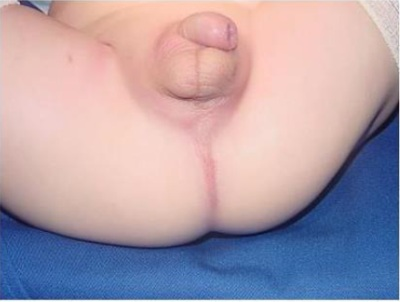
A Proctoplastia imediata.
B Colostomia em 2 bocas.
C Aguardar 24 a 48 horas.
D Invertograma.
Questão 74 · Atresias e Estenoses Duodenais · Cirurgia · 4000100078Sabendo-se que o termo atresia significa uma malformação onde há uma obstrução total da luz de um órgão luminar, podemos afirmar:
A Nas atresias duodenais, os recém-nascidos apresentam uma distensão da região epigástrica e vômitos biliosos
B A grande maioria das atresias de esôfago, intra-útero, são acompanhadas depolidrâmnio
C Na atresia de uretra observa-se durante o desenvolvimento fetal uma discretahidronefrose e polidrâmnio
D Na atresia de colon, os recém-nascidos apresentam uma pequena distensãoabdominal acompanhada de vômitos claros, ou eventualmente biliosos
Questão 75 · Cirurgia · Má Rotação Intestinal e Vólvulo do Intestino Médio · 4000095746Sobre a incidência de volvo, assinale a alternativa CORRETA.
A A maioria dos casos ocorre no período neonatal.
B A maioria dos casos ocorre em crianças entre 1 ano e 2 anos.
C A maioria dos casos ocorre em crianças com idade entre 5 e 10 anos.
D A maioria dos casos ocorre em crianças com 12 anos de idade.
Questão 76 · Malf ormações da Parede Abdominal · Cirurgia · 4000095182Defeitos da parede abdominal anterior é uma condição cirúrgica neonatal relativamente frequente em cirurgia pediátrica, sendo assim, assinale a alternativa INCORRETA:
A Gastrosquise é um defeito geralmente à direita do cordão umbilical.
B Atresia intestinal esta presente em mais de 60% dos pacientes com gastrosquise.
C Pacientes com onfalocele apresentam incidência de aproximadamente 50% de anomalias associadas.
D Um dos principais desafios na gastrosquise é lidar com o intestino disfuncional.
Questão 77 · Obstrução Duodenal · Pediatria · 4000085284Recém-nascido de 24 horas, prematuro de 35 semanas, portador de sindorme de Down, apresenta vômitos biliosos há 12 horas. Está na UTI neonatal em hidratação venosa e sonda orogástrica com drenagem biliosa. Há relato de polidrâmnio materno. O exame abdominal não revelou anormalidades. Não evacuou e somente eliminou pequena quantidade de mecônio no toque retal. RX simples de abdome evidencia o sinal da dupla bolha. Este quadro indica o diagnóstico de:
A Aganglionose intestinal congênita.
B Atresia jejunoileal.
C Obstrução duodenal.
D íleo meconial.
Questão 78 · Diagnóstico · Cirurgia · 4000085213Recém-nascido a termo apresenta vômitos claros 6 horas após o nascimento. Ao exame físico está muito bem, sem disfunção respiratória, ativo e com leve distensão do abdome superior. Considerando esse quadro clínico e o radiograma demonstrado a seguir, qual é a hipótese diagnóstica?
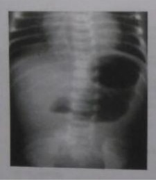
A Volvo gástrico
B Atresia de duodeno
C Má rotação intestinal
D Refluxo gastresofágico
E Doença celiaca grave
Questão 79 · Apresentação Clínica · Atresia do Esôf ago e Fístula Traqueoesof ágica · Pediatria · 4000130120Você é chamado para avaliar um recém-nascido a termo, nascido há três horas que está apresentando salivação intensa, crises de tosse e cianose, estando aparentemente engasgado, com distensão abdominal. Realizada aspiração da cavidade oral e orofaringe com melhora, foi tentada sondagem nasogástrica, porém a sonda não progrediu após introdução de cerca de 13 cm. Realizado radiograma de tórax/abdome: (Conforme imagem do caderno de questões) O diagnóstico é:
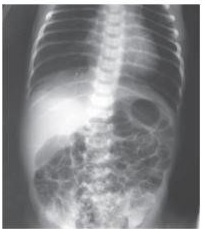
A Atresia esofágica.
B Atresia bilateral de coanas.
C Hérnia de Bochdalek.
D Atresia duodenal.
Questão 80 · Malf ormações Anorretais · Cirurgia · 4000119491RN do sexo masculino, nascido com 39 semanas de idade gestacional, de parto vaginal. Recebeu os cuidados iniciais de assistência ao RN sem nenhuma intercorrência. Ao exame físico, na sala de parto, observou-se ausência de ânus. Logo após, o paciente eliminou urina de cor escura (imagem). (Conforme imagem ) Em relação ao tratamento dessa malformação congênita, a conduta imediata é
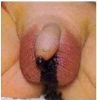
A expectante nas primeiras 48 horas de vida.
B cirúrgica, por meio de anorretoplastia sagital posterior.
C cirúrgica, por meio de colostomia em duas bocas.
D realizar radiografia com incidência de Wangesteen-Rice (invertografia).
Questão 81 · Atresia do Esôf ago e Fístula Traqueoesof ágica · Cirurgia · 4000115904O diagrama abaixo mostra a representação grá ca dos principais tipos de atresia de esôfago com ou sem fístula traqueoesofágica. Tipo mais frequente é aquele representado pela figura
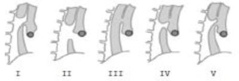
A V.
B IV.
C II.
D III.
E I.
Revisar: possível letra faltando em enunciado
Questão 82 · Apresentação Clínica · Cirurgia · 4000098486Recém-nascido com 6 horas de vida começou a apresentar insu ciência respiratória aguda progressiva. Exame físico: coração: bulhas rítmicas normofonéticas em hemitórax direito; abdome: escavado. O DIAGNÓSTICO É:
A Persistência do canal arterial.
B Situs inversus totalis.
C Hérnia diafragmática congênita.
D Cisto broncogênico.
Questão 83 · Etiopatogênese · Apresentação Clínica · Cirurgia · 4000097048Gestante com história de uso contínuo de crack não sabe a idade gestacional e não realizou pré-natal. O recém-nascido nasce prematuro com insu ciência respiratória grave e o médico descon a de que a causa desse quadro seja hérnia diafragmática congênita. Para confirmar sua suspeita, no raio X do recém-nascido, o médico deverá encontrar:
A defeito diafragmático esquerdo
B hipoplasia pulmonar bilateral
C defeito diafragmático direito
D derrame pleural bilateral
Questão 84 · Malf ormações da Parede Abdominal · Cirurgia · 4000057802Identifique como verdadeiras (V) ou falsas (F) as seguintes afirmativas: ( ) A gastrosquise é um defeito da parede abdominal no sítio do anel umbilical, recoberto por âmnio e peritônio. ( ) Bebês com gastrosquise apresentam incidência de 50% de anomalias associadas. ( ) Na onfalocele, o defeito abdominal é adjacente e lateral a um cordão umbilical de inserção normal, não recoberto por saco membranoso. ( ) Um dos desafios mais difíceis na conduta da gastrosquise é lidar com intestino disfuncional. Assinale a alternativa que apresenta a sequência CORRETA, de cima para baixo.
A F – V – F – V.
B V – F – F – F.
C V – F – V – V.
D V – V – V – F.
E F – F – F – V.
Questão 85 · Obstrução Duodenal · Cirurgia · 4000044999Recém-nascido a termo, com 40 horas de vida apresentou vômitos biliosos e distensão de abdome superior. Eliminou mecônio nas primeiras 24h de vida. Genitora com ultrassonogra a gestacional mostrando polidrâmnio. Diante desse paciente, assinale a alternativa CORRETA.
A Trata-se de uma obstrução intestinal baixa; o próximo passo é um enema opaco, pensando em Doença de Hirchsprung.
B Trata-se de uma obstrução intestinal baixa, e o diagnóstico de atresia intestinal é a primeira hipótese.
C Trata-se de uma estenose hipertrofica de piloro, e o próximo passo é uma ultrassonografia de abdome.
D Trata-se de uma obstrução intestinal alta, e a atresia de duodeno pode ser uma hipótese. A radiografia de abdome detectaria o sinal da dupla-bolha.
E Trata-se de uma obstrução intestinal intermediária baixa, e a atresia de cólon pode ser uma hipótese. A ultrassonografia abdominal com doppler é o exame de eleição.
Questão 86 · Enf isema Lobar Congênito · 4000006655Frente a um neonato com desconforto respiratório grave, o exame subsidiário mais útil para confirmar o diagnóstico de enfisema lobar congênito é:
A RX de tórax.
B Broncoscopia.
C Tomografia computadorizada do tórax.
D Arteriografia pulmonar.
E Videotoracoscopia.
Questão 87 · Obstrução Duodenal · Cirurgia · 4000115413Os recém-nascidos que apresentam distensão abdominal difusa acentuada devem ter incluídos, no diagnóstico diferencial, todas as opções abaixo, EXCETO:
A Atresia ileal.
B Atresia colônica.
C Megacólon congênito.
D Síndrome do cólon esquerdo congênito.
E Atresia duodenal.
Questão 88 · Diagnóstico · Apresentação Clínica · Cirurgia · 4000107678Menino, 4 dias de vida, apresenta vômitos amarelo-esverdeados desde as primeiras horas de vida, em grande quantidade, associado à distensão localizada no epigástrio e hipocôndrio esquerdo, com movimentos peristálticos de cima para baixo e da esquerda para a direita e ainda não eliminou mecônio. Com base no quadro clínico e nas guras apresentadas, podemos afirmar que o diagnóstico mais provável é:
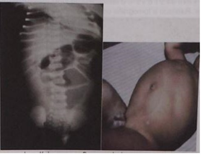
A Obstrução do jejuno alto.
B Estenose hipertrófica do piloro.
C Doença de Hirschsprung.
D Obstrução no duodeno após a papila de Vater.
Questão 89 · Malf ormações da Parede Abdominal · Pediatria · Onf alocele · 4000107567Médico entra em contato para encaminhar Recém-Nascido (RN), sexo masculino, com 3 horas de vida apresentando a malformação abaixo. O RN encontra-se em ar ambiente, eupneico, conteúdo bilioso em sonda orogástrica que foi introduzida logo após o nascimento. Considerando o tipo de defeito de fechamento da parede abdominal, o que está relacionado à sobrevida?
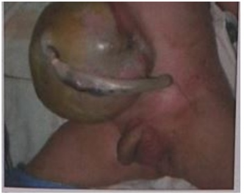
A Atresia intestinal.
B Malformações associadas.
C Cromossomopatias.
D Distúrbio de motilidade.
Questão 90 · Doença de Hirschsprung · Doença de Hirschsprung · Cirurgia · 4000106869Recém-nascido, sexo masculino, duas semanas de vida, admitido no pronto-socorro com vômitos e distensão abdominal. Informante refere que a criança não apresentou evacuações há sete dias. Evoluiu com distensão abdominal progressiva e inapetência, associado à piora do quadro de vômitos. Nascido a termo, permaneceu internado mais tempo do que o usual por "constipação intestinal". Ao exame físico apresenta-se em regular estado geral, desidratado, descorado, dispneico, afebril, anictérico. O exame abdominal mostra peristaltismo visível, ruídos hidroaéreos aumentados, timpanismo à percussão e resistente à palpação. Períneo sem alterações. Não foi realizado toque retal. Enema Opaco: (VER IMAGEM) Considerando a história clínica e o achado do exame de imagem acima, qual o diagnóstico e a conduta mais adequados?
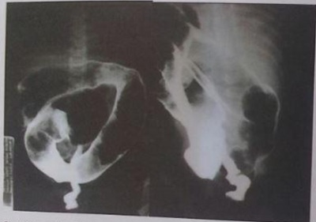
A Intussuscepção intestinal e cirurgia.
B Volvo intestinal e retossigmoidoscopia.
C Enterocolite necrosante e cirurgia.
D Doença de Hirschsprung e biópsia retal.
Questão 91 · Resultados · Tratamento · Cirurgia · 4000106851Menina, 2 anos de idade, com o diagnóstico de re uxo gastroesofágico desde de 6 meses de idade. Quando está em esquema terapêutico correto ca completamente assintomática, entretanto há um ano a criança não tem vindo aos retornos e nem tem feito uso correto das medicações. Há uma semana teve um episódio de engasgo com um pedaço de carne e foi submetida a remoção por endoscopia. A mãe relata que a criança nasceu com atresia de esôfago e que foi submetida a correção cirúrgica com 48 horas de vida. Qual a alternativa correta quanto ao diagnóstico e conduta terapêutica?
A Refluxo gastroesofágico patológico; indicar pHmetria esofágica de 24 horas.
B Estenose péptica de esôfago; deve ser feita cirurgia antirefluxo.
C Esôfago de Barret; está indicada a esofagectomia.
D Distúrbio de motilidade esofágica; deve ser feita manometria esofágica.
Revisar: possível letra faltando em enunciado
Questão 92 · Malf ormações Anorretais · Cirurgia · 4000121742Recém-nascido do sexo masculino apresenta ausência de ânus ao primeiro exame na sala de parto (VER IMAGEM). A conduta é
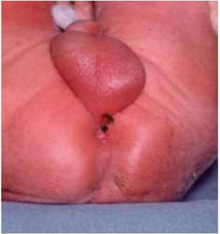
A uretrocistografia miccional para verificar presença de fístula retouretral.
B invertograma após 24 horas.
C anoplastia.
D aguardar 18 a 24 horas para verificar a presença de fístula perineal.
E sondagem para verificar a presença de mecônio na urina, indicativo de fístula retovesical.
Questão 93 · Doença de Hirschsprung · Doença de Hirschsprung · Cirurgia · 4000104180Menino, 5 anos de idade, com constipação intestinal há 2 anos. HMA: antes do início do quadro, evacuava diariamente. Começou a apresentar fezes endurecidas, com piora progressiva da constipação. Agora, ca até 20 dias sem evacuar e necessita de lavagens intestinais. A criança não tem vontade de evacuar e quando tem vontade não consegue eliminar as fezes, mas elimina atos ocasionais. EF: apresenta-se corado, bem nutrido e hidratado. Abdome globoso, onde palpa-se um grande fecaloma tomando todo o hemiabdome esquerdo, avançando a linha média para a direita. Ao toque: presença de fezes muito endurecidas, sem outras alterações. A conduta é:
A Manometria anorretal para se excluir disfunção do esfíncter anal interno causando megacólon.
B Biópsia anorretal para se confirmar doença de Hirschsprung.
C Enema opaco para iniciar manejo de cólon na constipação crônica com megacólon.
D Radiografia simples de abdome para confirmar suboclusão de cólon e encaminhar para cirurgia.
Questão 94 · Malf ormações da Parede Abdominal · Cirurgia · 4000122826A foto apresentada mostra recém-nascido. (VER IMAGEM) Após análise da imagem, pode-se a rmar que o recém-nascido é portador de:
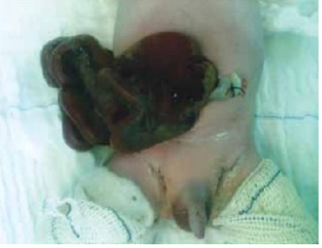
A onfalocele, pois há exteriorização das alças à direita do cordão umbilical e está associada a outras malformações.
B gastrosquise, pois o orifício de exteriorização é pequeno e tem sua origem na involução da veia umbilical direita.
C extrofia de cloaca.
D gastrosquise, pois há fígado exteriorizado no defeito e não há malformações associadas.
E onfalocele, pois há sofrimento das alças exteriorizadas, tornando-se difícil a correção cirúrgica.
Questão 95 · Doença de Hirschsprung · Doença de Hirschsprung · Cirurgia · 4000055843O megacólon congênito em crianças, também chamado de doença de Hirschsprung, pode ser diagnosticado através de vários exames complementares. Assinale aquele que NÃO faz parte dos exames desejados para o diagnóstico dessa doença.
A Radiografia simples de abdome.
B Enema opaco.
C Manometria anorretal
D Phmetria.
E Pesquisa de células ganglionares e atividade da acetilcolinesterase.
Questão 96 · Cirurgia · Má Rotação Intestinal e Vólvulo do Intestino Médio · 4000120050Recém-nascido prematuro de 32 semanas, com Apgar 8 e 9 evoluiu com doença da membrana hialina. Está com 10 dias de vida com parâmetros respiratórios muito bons. Desde o 2º dia iniciou a alimentação enteral mínima por sonda nasogástrica, com boa aceitação e evacuação normal de mecônio. Há 2 horas apresentou letargia, palidez, taquicardia e distensão abdominal acentuada com drenagem de grande quantidade de líquido de estase pela sonda. Nota-se distensão dolorosa à palpação profunda, sem sinais ogísticos e o RX simples de abdome revela apenas distensão gástrica e opacidade no restante do abdome. O diagnóstico mais provável é:
A Atresia de duodeno.
B Doença de Hirschsprung.
C Enterocolite necrosante.
D Volvo de intestino médio.
Questão 97 · Obstrução Duodenal · Cirurgia · Atresias jejunoileais · 4000100736Recém-nascido do sexo feminino, adequado para a idade gestacional, com 38 semanas de gestação, parto normal, apresentou na sala de parto uma aspiração de 40 ml de líquido gástrico no exame após nascimento. A primeira hipótese diagnóstica é:
A Enterocolite necrosante.
B Atresia de esôfago com fístula distal.
C Atresia de esôfago sem fístula.
D Obstrução intestinal.
Questão 98 · Cirurgia · Atresias jejunoileais · 4000008637Um lactente com quadro de obstrução intestinal caracterizado por grande distensão abdominal, parada precoce de eliminação de gases e fezes e com vômitos tardios. Vê-se na radiogra a simples de abdome muitas alças de delgado dilatadas e com nível hidroaéreo. Este paciente deve apresentar:
A Alcalose metabólica hipercalêmica e hipernatrêmica.
B Acidose metabólica hipernatrêmica e hipercalêmica.
C Acidose metabólica hipernatrêmica e hipocalêmica.
D Acidose metabólica hiponatrêmica e hipocalêmica.
E Alcalose metabólica hipocalêmica e hiponatrêmica.
Questão 99 · Diagnóstico · Cirurgia · Apresentação Clínica · 4000103141Recém-nascido masculino, com 5 horas de vida, começa a apresentar vômitos biliosos e distensão crescente no epigástrio. O RX simples mostra imagem de dupla bolha no andar superior do abdome e distribuição irregular de ar, em pequenas bolhas, por toda sua extensão. O diagnóstico provável é: Respostas: 1 12 23 34 45 56 67 78 89
A Refluxo gastroesofágico, que nesta idade deve ser fisiológico.
B Hérnia inguinal encarcerada.
C Suboclusão intestinal, provavelmente por pâncreas anular ou má rotação intestinal.
D Estenose hipertrófica do piloro.